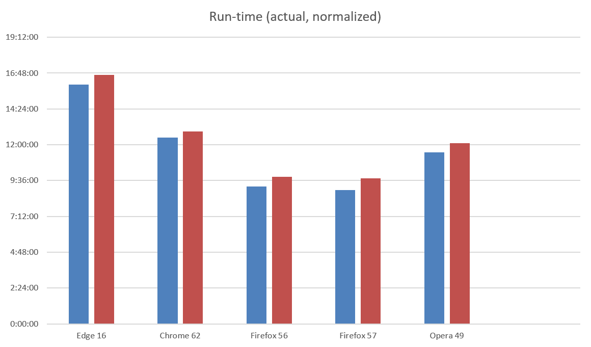

The Microsoft Edge team measured the time it took three identical Surface Book laptops to run fully through their batteries while streaming HTML5 video in fullscreen.
The test was done on three Surface Books running build 16299 and connected to the Internet through Wifi.
Microsoft Edge lasted 79% longer than Firefox, 29% longer than Chrome, and 40% longer than Opera in this test.
Additional numbers were generated to control for battery health and to reflect what the performance might have looked like if the battery run-down had consumed the battery design capacity of the device. This was used as a gut-check to ensure that one browser wouldn't significantly outperform another in conditions where battery health had deteriorated.
| Browser / Version | Average Time | Average Time (normalized) |
| Microsoft EdgeHTML 16.16299 | 16:02:50 | 16:41:06 |
| Google Chrome 62.0.3202.94 (64-bit) | 12:28:03 | 12:53:41 |
| Mozilla Firefox 56.0.2 (64-bit) | 9:12:25 | 9:51:15 |
| Mozilla Firefox 57.0 (64-bit) | 8:58:18 | 9:44:23 |
| Opera 49.0.2736.39 (PGO) | 11:28:53 | 12:06:21 |
The test was performed on four separate Surface Book laptops running the Windows 10 Fall Creator's Update (16299 release). A sample was taken for each browser on each laptop. These computers were configured to the following settings, to increase consistency between measures and reduce tasks that may start during the measurement and interfere with the results, while still representing a realistic user setup:
In order to collect precise power usage data, the Maxim power driver was installed onto each machine.
| Processor | i5-6300U @ 2.4GHz |
| Memory | 8G |
| Graphics | Intel HD Graphics 520 |
While plugging into power, each browser was navigated to the video test site. The quality option was set to 720p, and the sync mechanism was used to start the videos simultaneously. All laptops were plugged into the same power strip, and power was shut off as the video began.
The laptops were allowed to play video until all of them had lost power. After the power had run down and the laptops had shut off, power was restored. Run-time and power consumption data was then collected by running "powercfg /spr" and opening the generated report.
For the video test, all methodology was the same, except that the duration value was determined by examining the clock that was placed behind the laptops.
| Browser | Actual Time | Normalized Time | CPU | GPU | WiFi | Edge Advantage (actual) | Edge Advantage (normalized) |
|---|---|---|---|---|---|---|---|
| Edge 16 | 16:02:50 | 16:41:06 | 207 mW | 50 mW | 62 mW | ||
| Chrome 62 | 12:28:03 | 12:53:41 | 419 mW | 55 mW | 12 mW | Edge lasts 29% longer | Edge lasts 29% longer |
| Firefox 56 | 9:12:25 | 9:51:15 | 536 mW | 1,049 mW | 10 mW | Edge lasts 74% longer | Edge lasts 69% longer |
| Firefox 57 | 8:58:18 | 9:44:23 | 574 mW | 1,273 mW | 7 mW | Edge lasts 79% longer | Edge lasts 71% longer |
| Opera 49 | 11:28:53 | 12:06:21 | 518 mW | 99 mW | 12 mW | Edge lasts 40% longer | Edge lasts 38% longer |
| Browser | Laptop | Duration | Energy Spent | Avg CPU Power | Avg GPU Power | Avg WiFi Power |
|---|---|---|---|---|---|---|
| Chrome 62 | A | 12:09:25 | 65,581 mWh | 402 mW | 36 mW | 3 mW |
| Opera 49 | B | 11:10:48 | 63,075 mWh | 493 mW | 79 mW | 8 mW |
| Firefox 56 | C | 9:13:28 | 65,370 mWh | 524 mW | 1,452 mW | 7 mW |
| Edge 16 | D | 13:33:05 | 66,008 mWh | 283 mW | 107 mW | 36 mW |
| Edge 16 | A | 16:45:17 | 65,872 mWh | 192 mW | 36 mW | 101 mW |
| Chrome 62 | B | 12:44:31 | 66,675 mWh | 361 mW | 48 mW | 10 mW |
| Opera 49 | C | 11:44:28 | 68,624 mWh | 544 mW | 145 mW | 17 mW |
| Firefox 56 | D | 7:49:44 | 59,805 mWh | 640 mW | 1,748 mW | 11 mW |
| Firefox 56 | A | 9:49:59 | 64,147 mWh | 490 mW | 437 mW | 2 mW |
| Edge 16 | B | 17:54:29 | 66,015 mWh | 167 mW | 28 mW | 57 mW |
| Chrome 62 | C | 12:50:37 | 66,637 mWh | 424 mW | 61 mW | 23 mW |
| Opera 49 | D | 11:04:10 | 63,300 mWh | 561 mW | 103 mW | 9 mW |
| Opera 49 | A | 11:56:07 | 66,465 mWh | 472 mW | 69 mW | 15 mW |
| Firefox 56 | B | 9:56:29 | 67,740 mWh | 490 mW | 558 mW | 20 mW |
| Edge 16 | C | 15:58:30 | 67,207 mWh | 185 mW | 30 mW | 52 mW |
| Chrome 62 | D | 12:07:38 | 67,612 mWh | 488 mW | 73 mW | 10 mW |
| Firefox 57 | A | 9:14:27 | 63,885 mWh | 507 mW | 559 mW | 1 mW |
| Firefox 57 | B | 9:16:22 | 64,958 mWh | 559 mW | 1,506 mW | 9 mW |
| Firefox 57 | C | 8:57:54 | 63,451 mWh | 570 mW | 1,594 mW | 8 mW |
| Firefox 57 | D | 8:24:30 | 61,493 mWh | 660 mW | 1,432 mW | 9 mW |
Here, the normalization factor is a ratio of the laptop battery's design capacity vs the actual energy consumed before the laptop shutdown.
| Laptop | Browser | Energy | Normalization Factor | Normalized Time |
|---|---|---|---|---|
| A | Chrome 62 | 65581 | 1.050639667 | 12:46:21 |
| B | Opera 49 | 63075 | 1.092382085 | 12:12:46 |
| C | Firefox 56 | 65370 | 1.054030901 | 9:43:22 |
| D | Edge 16 | 66008 | 1.043843171 | 14:08:44 |
| A | Edge 16 | 65872 | 1.0459983 | 17:31:31 |
| B | Chrome 62 | 66675 | 1.033400825 | 13:10:03 |
| C | Opera 49 | 68624 | 1.004051061 | 11:47:19 |
| D | Firefox 56 | 59805 | 1.152111028 | 9:01:11 |
| A | Firefox 56 | 64147 | 1.074126615 | 10:33:43 |
| B | Edge 16 | 66015 | 1.043732485 | 18:41:28 |
| C | Chrome 62 | 66637 | 1.033990126 | 13:16:49 |
| D | Opera 49 | 63300 | 1.08849921 | 12:02:57 |
| A | Opera 49 | 66465 | 1.036665914 | 12:22:22 |
| B | Firefox 56 | 67740 | 1.017153823 | 10:06:43 |
| C | Edge 16 | 67207 | 1.025220587 | 16:22:40 |
| D | Chrome 62 | 67612 | 1.019079453 | 12:21:31 |
| A | Firefox 57 | 63885 | 1.078531737 | 9:58:00 |
| B | Firefox 57 | 64958 | 1.060716155 | 9:50:09 |
| C | Firefox 57 | 63451 | 1.085908812 | 9:44:07 |
| D | Firefox 57 | 61493 | 1.120485258 | 9:25:17 |